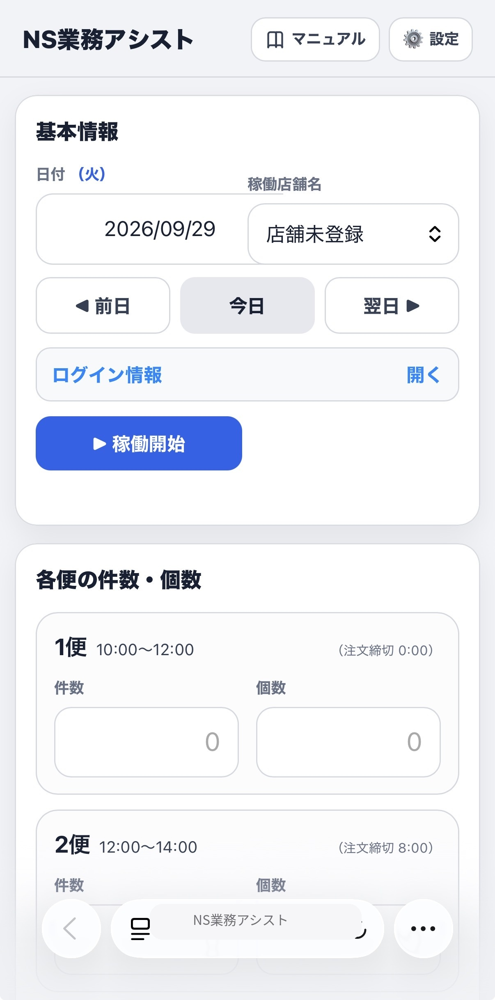
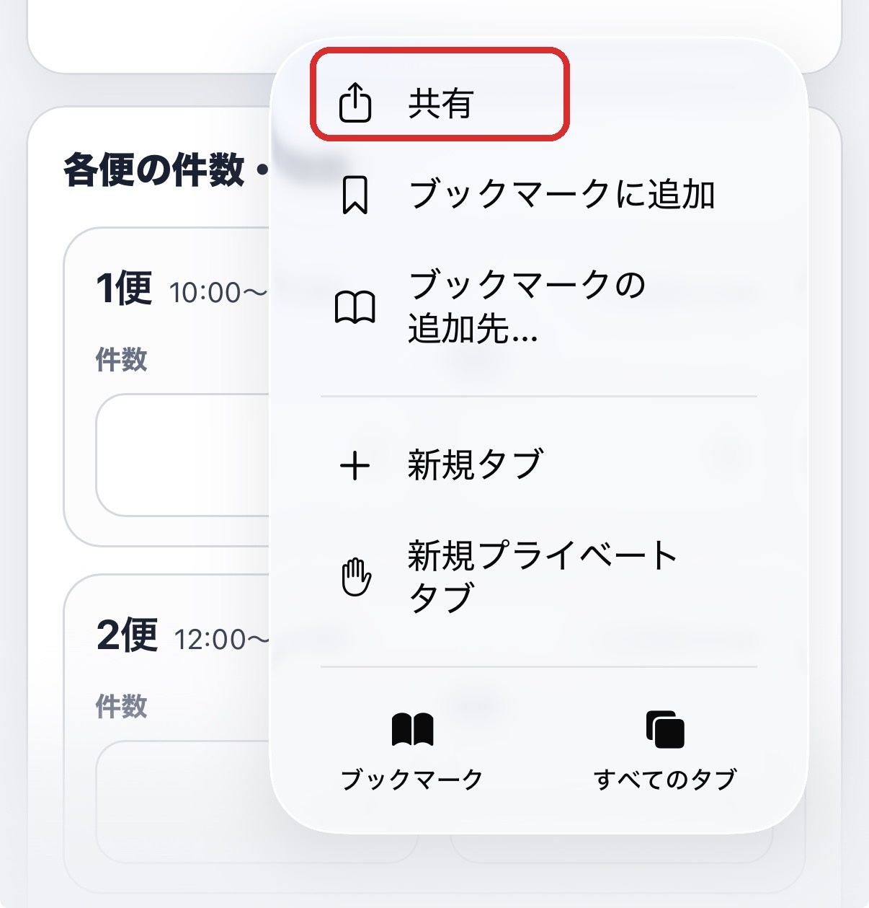
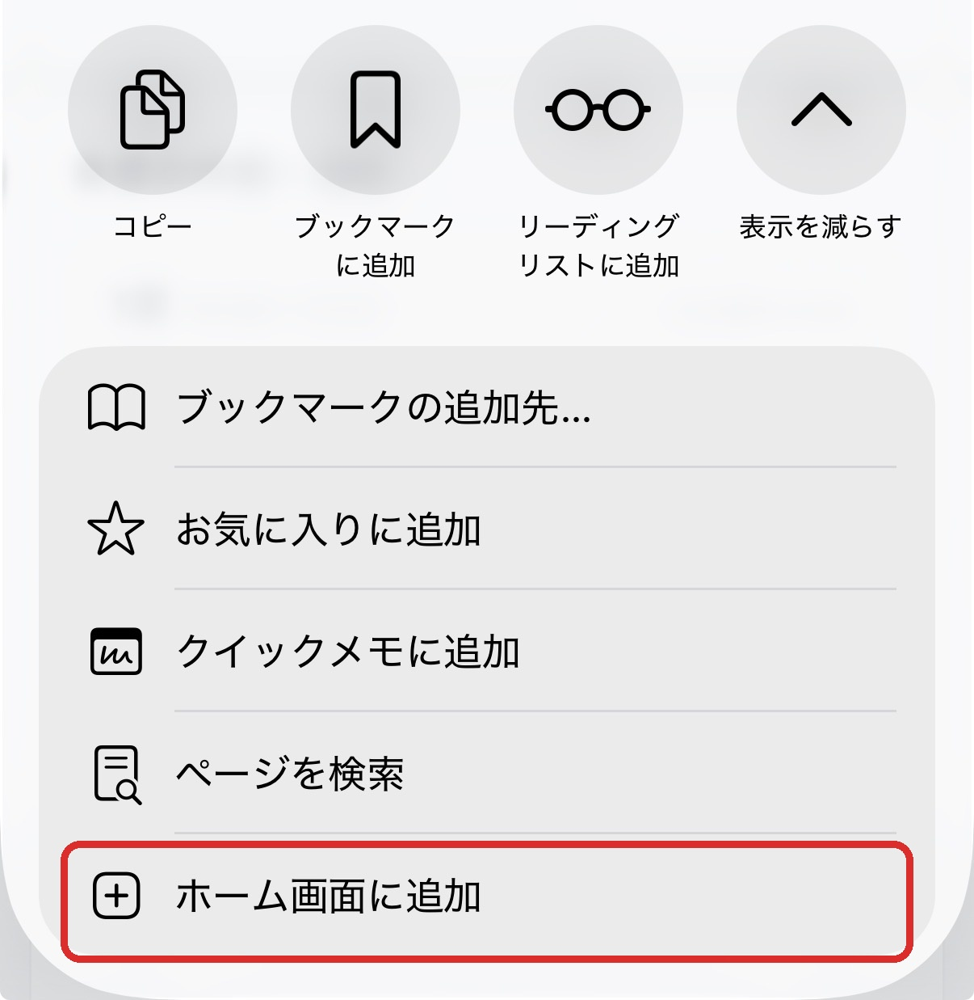
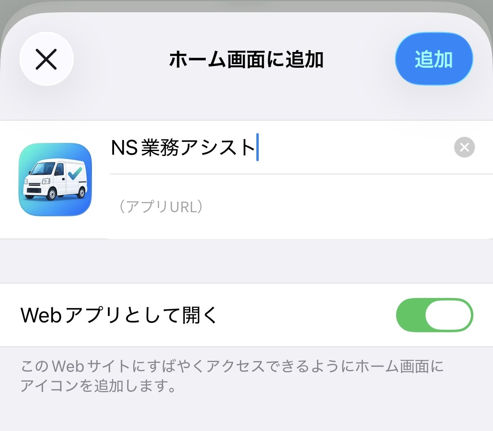
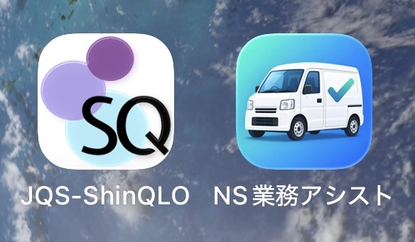

ホーム画面に
アプリを追加する
はじめに
NS業務アシスト本体のURLは、アプリ提供者から別途案内されたものをご使用ください。案内されたURLをブラウザで開いたら、以下の手順に進んでください。
NS業務アシスト本体のURLは、アプリ提供者から別途案内されたものをご使用ください。案内されたURLをブラウザで開いたら、以下の手順に進んでください。
iPhone
iPhoneではSafariを使用します。
1Safariで、別途案内されたNS業務アシストのURLを開きます。

2画面下部のメニューから「共有」を選択します。

3共有メニューから「ホーム画面に追加」を選択します。

4「Webアプリとして開く」がONになっていることを確認し、右上の「追加」をタップします。

5ホーム画面に白い軽バンの「NS業務アシスト」アイコンが追加されれば完了です。

日々の業務でスムーズに利用できるよう、追加されたNS業務アシストのアイコンは、上の画像のようにShinQLOのアイコンの隣など、すぐに開ける位置へ配置しておくことをおすすめします。
Android
AndroidではChromeで、別途案内されたNS業務アシストのURLを開きます。
- Chromeのメニューを開きます。
- 「アプリをインストール」または「ホーム画面に追加」を選びます。
- 画面の案内に従って追加します。
- ホーム画面にNS業務アシストのアイコンが表示されたら完了です。
Chrome、Android、端末のバージョンによって、メニューの文言や表示位置が異なる場合があります。